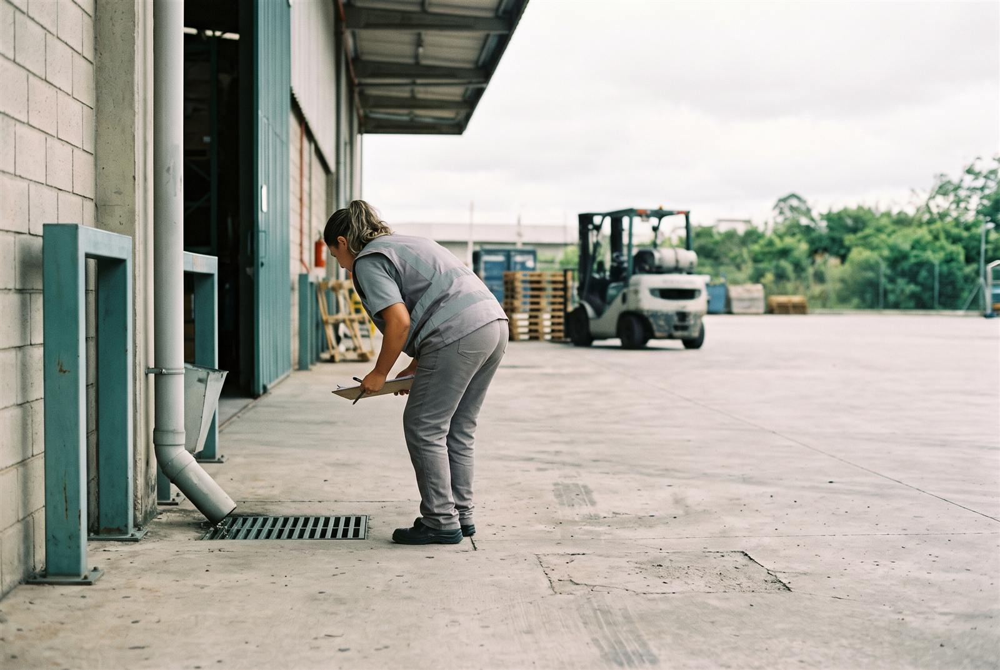

Administradoras de condomínios
Uma carteira de prédios com caixa d'água, laje e jardim. Cada síndico recebe a situação do distrito e o comunicado para os moradores.
Protótipo aberto a projetos-piloto
Para quem cuida de muitos endereços. A cada boletim oficial, o Pathogen mostra a situação do território de cada unidade, entrega o comunicado da semana pronto para enviar e guarda o registro das checagens para o relatório. Sem coletar dado de saúde de ninguém.
O número da dengue é público. O trabalho de transformar esse número em checagem feita, aviso enviado e relatório entregue, unidade por unidade, é o que o Pathogen assume.
Uma carteira de prédios com caixa d'água, laje e jardim. Cada síndico recebe a situação do distrito e o comunicado para os moradores.
Lojas, pátios, canteiros e unidades de ensino. Quem cuida de facilities ou de segurança do trabalho vê qual unidade já fez a checagem.
Para quem já vende vistoria: o território de cada cliente e um relatório para entregar depois da visita.
Quem cuida das unidades acompanha os territórios. Quem trabalha nelas consulta o próprio distrito. Uma tela não enxerga a outra.
RH, facilities ou saúde ocupacional veem o distrito de cada unidade, com a semana do boletim, e registram o que foi feito em cada uma.
| Unidade | Distrito | por 100 mil | Faixa |
|---|---|---|---|
| Carregando o boletim… | |||
Cada colaborador recebe um link da empresa e vê, no celular, o distrito onde mora ou trabalha, com as orientações de prevenção.

Por distrito, toda semana: casos de dengue e incidência por 100 mil habitantes, casos de chikungunya, semana do boletim e data de corte.
Uma convenção da Pathogen pela incidência, de 1 a 4. Em distritos pequenos a taxa é puxada para a média da cidade, e o painel avisa quando o dado é instável.
Configure unidades e veja os indicadores oficiais do distrito de cada uma. Os números vêm dos mesmos arquivos do Epimapa SP; nenhum é criado pelo painel.
Ambiente demonstrativo. Unidades de exemplo não representam clientes ou instalações reais.
Só um nome de referência e o distrito. O painel não pede endereço nem localização.
| Comparar | Unidade | Distrito | Dengue: casos no ano | Dengue: por 100 mil hab. no ano | Chikungunya: casos autóctones no ano | Boletim | Remover |
|---|
Nenhuma unidade configurada. Adicione uma acima ou carregue as unidades de exemplo no fim desta seção.
Marque duas ou mais unidades na coluna "Comparar".
Registre atividades, não pessoas: sem nomes de funcionários, sintomas, diagnósticos, CPF, data de nascimento ou fotos.
| Atividade | Unidade | Período | Status | Observações | Remover |
|---|
Nenhuma atividade registrada.
Um texto pronto para o grupo da equipe, o mural ou os moradores, montado com os números oficiais do distrito da unidade e as orientações do Ministério da Saúde. Revise antes de enviar.
Mande este link pelo canal interno (e-mail, intranet ou cartaz com QR code). Cada pessoa vê, no próprio celular, os números oficiais do distrito onde mora ou trabalha, com a fonte e a semana do boletim, e as orientações de prevenção. O distrito consultado não volta para a organização nem para o Pathogen: a página não guarda nem envia nada.
Abre a janela de impressão do navegador. Para guardar o arquivo, escolha "Salvar como PDF".
O nome da organização, as unidades e o plano ficam só neste navegador, no armazenamento local do aparelho. Nada é enviado ao Pathogen nem sincronizado com outras pessoas: outro navegador ou aparelho não vê o que está aqui. As unidades de exemplo só são gravadas se você mudar alguma coisa.
A conta usa só os números que você digitar. O Pathogen não estima quantos casos a sua equipe terá nem promete evitar algum: a conta mostra o tamanho do problema e quantos afastamentos equivalem ao valor da assinatura.
Referências públicas para comparar com os seus números: infectologistas citam de 3 a 10 dias de afastamento por dengue (Diário do Comércio); num levantamento da consultoria B2P, 2.651 afastamentos no 1º trimestre de 2024 custaram R$ 1,3 milhão às empresas da amostra (Exame). Nada do que você digita aqui é gravado ou enviado.
O produto ainda não opera com nenhuma organização. Os valores abaixo são a proposta para os primeiros pilotos e podem mudar com o que aprendermos neles.
| Plano | Para quem | Valor proposto | O que inclui |
|---|---|---|---|
| Piloto | Qualquer organização | Gratuito60 dias, até 10 unidades | Tudo do Essencial e uma conversa de avaliação no fim |
| Essencial | Redes, escolas e obras | R$ 29 por unidade por mêsmínimo de R$ 149 por mês, contrato anual | Painel das unidades, plano de prevenção, comunicado da semana, relatório e link dos colaboradores |
| Carteira | Administradoras e redes com mais de 50 unidades | R$ 12 por unidade por mêscontrato anual | Essencial e relatórios por unidade gerados em lote |
| Parceiro | Controle de pragas e facilities | R$ 490 por mêsmais R$ 5 por cliente atendido | Relatório com a marca do parceiro para entregar ao cliente |
O contrato é anual porque a dengue se concentra no primeiro semestre: o plano de prevenção começa antes da temporada. O piloto não inclui dados de saúde de pessoas nem promete redução de casos; medir esse efeito exigiria um estudo específico. Itens ainda em construção: contas com mais de um usuário, aviso por e-mail a cada boletim e relatórios em lote.
Para empresas, institutos e ONGs que querem financiar prevenção num território escolhido, com relatório do que foi feito. O Epimapa SP continua gratuito para quem mora na cidade.
O relatório não afirma que uma campanha reduziu casos de dengue. Isso exigiria uma avaliação epidemiológica que não faz parte desta proposta.
Conte o básico da sua operação. O pedido é montado aqui mesmo, no seu navegador, e só sai dele quando você enviar.
O e-mail comercial da Pathogen ainda não foi configurado nesta página. Copie o pedido e envie pelo contato que você recebeu da equipe.